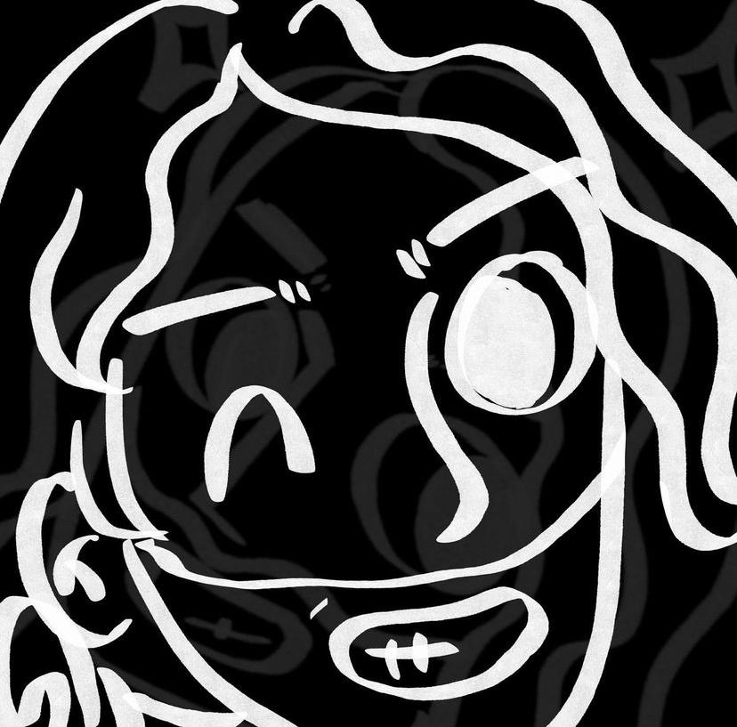

Who are His & Her Circumstances? ・ かれかのは？
Matt
the strings 🎸
Senie

the slaps 🎸👏
Shuhei
the sticks 🥁
Singing about heartbreak, video games and everything in between, His and Her Circumstances (named after an obscure 90s anime) wear their hearts on their sleeves as they blast out endearing emo choruses. Drenched in pop culture influences, they bring the noise, but more importantly, bring the feels.
~~~
His and Her Circumstancesは、心の痛み、ビデオゲーム、そして日常のさまざまな出来事をテーマにした楽曲で、聴き手に深い感情を呼び起こすバンドです。1990年代のアニメから名前を取り、その音楽は感動的なエモコーラスとポップカルチャーの影響が融合した独自のスタイルを展開しています。彼らの楽曲は、ただの騒音を超え、心に残るメッセージと感情を伝えることで知られています。His and Her Circumstancesは、音楽を通じて聴き手に強い印象を与え、共感を呼び起こすことを目指しています。